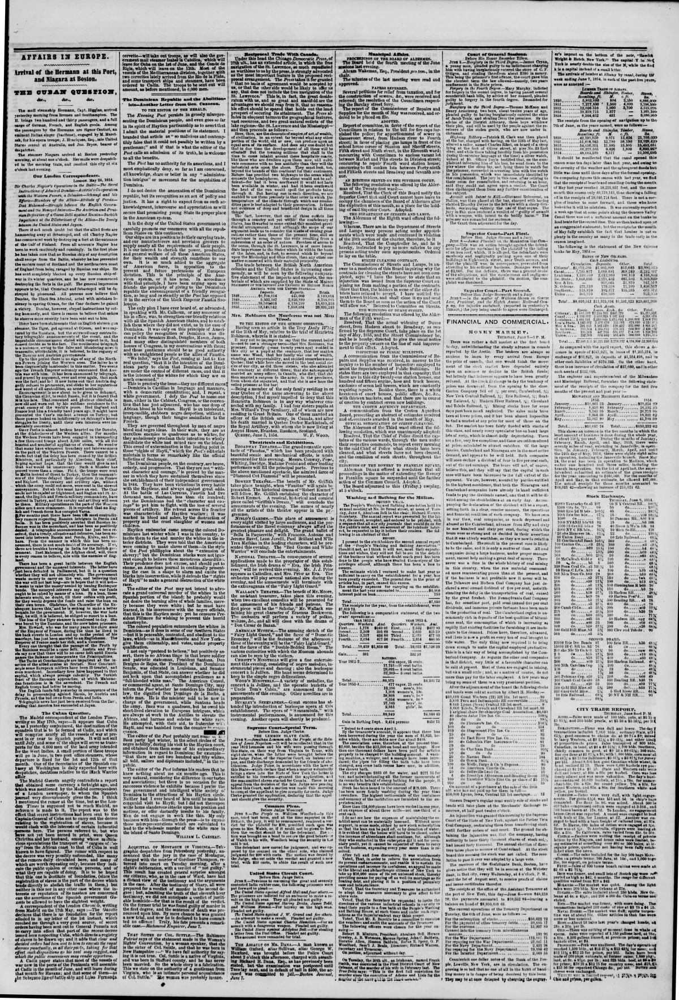

Those "rights of Hayti," which the Punt's editorials maintain in terms
https://www.loc.gov/resource/sn83030313/1854-06-09/ed-1/?sp=3

See the original pageVer la página original
The June 9, 1854 New York Herald reports that the Dominican people are brave, orderly, and progressive, having successfully sustained their independence since 1844 by winning every battle against the Haytiens despite great odds, such as at the battle of Las Carreras where Santana defeated Faustin. The article states that Haytien emissaries attempted to incite colored Dominicans to murder whites and believe false rumors that Americans were coming to enslave them. Furthermore, the newspaper criticizes an American journal (the Post) for presenting cases in a way that incites insurrection among blacks while defending Hayti's destructive actions.
El ejemplar del 9 de junio de 1854 de The New York Herald refiere que el pueblo dominicano es valiente, ordenado y progresista, habiendo sostenido con éxito su independencia desde 1844 al salir victorioso en todas las batallas libradas contra los haitianos pese a la disparidad numérica, como en la batalla de Las Carreras, donde Santana derrotó a Faustino. El artículo señala que emisarios haitianos intentaron incitar a los dominicanos de color a dar muerte a los blancos y dar crédito al falso rumor de que los estadounidenses venían a esclavizarlos. Asimismo, el periódico censura a un diario norteamericano (el Post) por exponer los hechos de un modo que atizaba la insurrección de los negros mientras disculpaba los desmanes destructivos de Haití.
Where this standsEn qué punto está
The full text of this article is still being prepared. Until it is ready, this page carries a summary, the passage found on the page, and the link to the original, which is always one click away.El texto completo de este artículo aún se está preparando. Hasta que esté listo, esta página lleva un resumen, el pasaje encontrado en la página y el enlace al original, que siempre está a un clic.
The passage this summary was written fromEl pasaje del que se escribió este resumen
The passage where this article was found, copied from the newspaper page itself, reading errors and all. This is exactly what the summary above is based on.El pasaje donde se encontró este artículo, copiado de la propia página del periódico, con sus errores de lectura y todo. Esto es exactamente aquello en lo que se basa el resumen de arriba.
those "rights of Hayti," which the Punt's editorials
maintain in terms so remarkably liko the official
bulletins of Soulouque.
The Dominican people, on the contrary, are brave,
orderly, and progressive. That they are not with
out character and courage," Is proved by the man
ner in which they have sustained themselves since
the establishment of their independent government
in 1H44. They have been victorious in every battle
with the Haytiens, and always ugainst great odds.
At the battle of Las Carreras, Faustin had tlvo
thousand men, Suntana less than six hundred;
j et the Dominicans had the" character and co i
rage" to put him to flight, with the loss of several
pieces of artillery. His retreat across tl o frontier
wan characteri-tic of Ha.vtien warfare; it was
marked in blood and ashes, by the destruction of
property and the cruel slaughter of women and
children.
Haytien emissaries came among the colored D
minicans last winter while I was iu the country, to
incite them to rise and murder the whites in the in
terior districts. They were told that the Americana
were coming to make slaves of them?in the style
of the Post philippics about the "extension of
slavery;" but the Dominican blacks were not igno
rant enough to believe these monstrous absurdities
Their prudence does not excuse, an l should put to
shnme, an American journal in continually present
ing the case in a shape to alarm and excite the
blacks into insurrection, while it defends the rights
of Hayti" to make a general destruction of the white
race. A
The editor of the Pout may not intend to advo
How to cite this articleCómo citar este artículo
The New York Herald. (1854). New York [N.Y.], June 9, 18549 de junio de 1854. DR in the American PressRD en la Prensa Norteamericana. Library of Congress, Chronicling America: https://www.loc.gov/resource/sn83030313/1854-06-09/ed-1/?sp=3
ReferencesReferencias
Library of Congress, Chronicling America: The New York Herald, June 9, 18549 de junio de 1854.
Send an observationEnviar una observación
Does this article connect with your family, your town, or something you know? Did we get something wrong? Write to us. Observations go to the editor's inbox and are read by a person.¿Este artículo conecta con su familia, su pueblo o algo que usted conoce? ¿Nos equivocamos en algo? Escríbanos. Las observaciones llegan al buzón del editor y las lee una persona.
Send observationEnviar observación